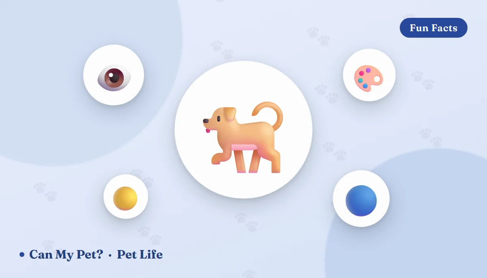

Can Dogs See Color? What the World Really Looks Like to Your Dog

Somewhere along the way, most of us picked up the "fact" that dogs see the world in black and white. It's one of the most persistent pet myths there is — and it's wrong. Your dog absolutely sees color. Just not the same colors you do. Here's what science actually knows about dog vision, what your living room looks like through your dog's eyes, how that compares with a cat's view, and the one small change (hint: it involves toy shopping) that makes your dog's world instantly brighter.
Where the black-and-white myth came from
The myth has a surprisingly specific origin. In 1937, Will Judy — a well-known dog author and publisher of Dog World magazine — wrote that dogs likely saw the world in shades of black and gray. The idea stuck for decades, repeated in training manuals and around dinner tables, long before anyone had properly tested it.
Science caught up in 1989, when vision researchers Jay Neitz, Timothy Geist and Gerald Jacobs published a landmark study in the journal Visual Neuroscience. Working with dogs and colored light panels, they showed the animals could reliably tell certain colors apart from shades of gray — something a truly colorblind (monochromatic) animal simply cannot do. Dogs see color; they just see less of it than we do.
The science: two cones instead of three
Color vision comes down to cells in the retina called cones. Humans typically have three types, tuned to roughly blue, green and red-yellow wavelengths, which our brains blend into millions of shades. Dogs have two cone types — one most sensitive around the blue-violet range (about 429 nanometers) and one around yellow-green (about 555 nanometers). Vision scientists call this dichromatic vision, and it's the same basic setup found in cats, and in people with red-green color blindness.
If you want a feel for it, it's very close to what a person with deuteranopia (red-green color blindness) experiences. Blues and yellows are vivid and clear. Red, orange and green exist — but they all collapse into a similar band of brownish, grayish tones that are hard to tell apart.
How scientists actually test what a dog sees
You obviously can't ask a dog to read an eye chart. Researchers instead rely on behavioral tests: a dog is shown several panels lit in different colors and brightnesses, and trained to nose or paw the one panel that's a different color to earn a treat. By scrambling the brightness of each panel from trial to trial, scientists can rule out the possibility that a dog is just judging "lighter vs. darker" rather than genuinely seeing hue.
A 2013 study by Aleksandr Kasparson, Jason Badridze and Vadim Maximov, published in Proceedings of the Royal Society B, ran exactly this kind of test and found something notable: when brightness cues and color cues pointed to different answers, the dogs in the study leaned more heavily on color than on brightness to solve the task — the opposite of what many scientists had assumed for decades. It's a good reminder that "dogs mostly see brightness, not color" is itself an oversimplification.
🧑 The same scene, your eyes:
🐶 The same scene, your dog's eyes (approx.):
An approximation based on published models of canine dichromatic vision. Notice how red, orange and green all drift toward the same khaki-brown — while blue and yellow stay distinct.
Dogs vs. cats vs. humans: a side-by-side look
Dogs and cats are both dichromats, but their eyes are tuned for slightly different jobs. Here's how the three compare at a glance.
| Feature | Humans | Dogs | Cats |
|---|---|---|---|
| Cone types | 3 (trichromatic) | 2 (dichromatic) | 2 (dichromatic) |
| Color range | Full spectrum | Blues & yellows | Blues & yellows (muted further) |
| Visual acuity (sharpness) | 20/20 baseline | ~20/75 | ~20/100–20/200 |
| Field of view | ~180–190° | ~240–250° | ~200° |
| Low-light vision | Baseline | Much better (tapetum lucidum) | Best of the three (larger tapetum, more rods) |
| Flicker sensitivity (screens) | ~50–60 Hz cutoff | ~70–80 Hz cutoff | ~70–80 Hz cutoff |
Curious about the rest of a cat's senses and moods? Our guide to cat body language and tail talk covers how they communicate beyond what their eyes take in.
So why does the red ball keep "disappearing"?
Here's the practical punchline. A red ball on green grass is high-contrast and easy for you to track. For your dog, red and green are nearly the same muddy tone — so the ball visually melts into the lawn. If your dog seems to "lose" a toy that's sitting in plain sight, its color is often the reason (that, and dogs lean on their nose more than their eyes anyway — see our guide on how good a dog's sense of smell really is).
Interestingly, the classic yellow-green tennis ball is one of the few fetch-toy colors that reads clearly to both species — it's part of why it became the default fetch toy in the first place, long before anyone studied canine color vision on purpose.
Where your dog's eyes beat yours
1. Night vision that puts yours to shame
Dog retinas are packed with rod cells (the dim-light specialists), and behind the retina sits the tapetum lucidum — a mirror-like layer that reflects light back through the eye for a second pass. It's why dogs navigate a dark backyard with ease, and why their eyes glow greenish in photos.
2. Motion detection worthy of a security camera
Dogs notice tiny movements at distances where we'd see nothing at all — a squirrel twitch across the park, a subtle hand signal from you. Their eyes evolved for a hunter's priority: catch the thing that moves, not admire the sunset.
3. A wider view of the world
Depending on head shape, dogs see roughly 240–250 degrees around them, compared with about 190 for humans. Less binocular overlap for depth, more panorama for spotting approaching... anything.
4. But the fine print is blurry
Sharpness is where dogs give ground: typical canine visual acuity is around 20/75 (a figure widely cited from veterinary vision research by Paul Miller and Christopher Murphy), meaning what you'd see clearly from 75 feet, your dog resolves at about 20. Faces and shapes go soft at a distance — which is why your dog may bark at you across the park until your smell or voice arrives to confirm it's you.
5. Screens that flicker for us, don't flicker for them
Dogs perceive flicker at a higher rate than humans do — roughly 70–80 flashes per second versus our 50–60. That's why old CRT televisions, which refreshed too slowly for a dog's eyes, looked like an unwatchable strobing mess to dogs even when they looked smooth to us. Modern LED and LCD screens refresh fast enough that most dogs now see a stable picture.
Do puppies see color from birth?
No. Puppies are born with their eyes sealed shut and typically open them somewhere between 10 and 14 days of age. Even once open, vision is blurry and mostly limited to light, dark and movement at first. Full dichromatic color discrimination, along with sharper focus and depth perception, keeps developing over roughly the first 8 weeks as the visual system matures — one more reason very young puppies rely so heavily on smell, touch and their mother's presence in those early weeks.
Can dogs see ultraviolet light?
This one is still being worked out. A 2014 study by Ron Douglas and Glen Jeffery, published in Proceedings of the Royal Society B, measured how much ultraviolet light passes through the lenses of various mammals and found that dog lenses (like those of cats, ferrets and several other species) let through more near-UV light than human lenses do, which fully block it. That doesn't automatically mean dogs perceive a "UV color" the way some rodents, birds and insects do — it may simply add a bit of extra brightness or glare rather than a distinct hue. It's an area of ongoing research rather than a settled fact.
🍂 Fall & Halloween: color vision in the real world
Autumn is a great season to put this science to practical use on walks and at home.
- Orange pumpkins and fall leaves blend together for your dog. That cheerful pile of orange, red and brown leaves reads to your dog as one fairly uniform tan-ish tone — so a dropped treat, a small hazard, or even a curious critter hiding in the pile may be harder for your dog to spot by sight alone (their nose does the real work here).
- Evenings get darker earlier. As sunset creeps up through fall, your dog's excellent low-light vision is an advantage on walks — but drivers can't see as well. A blue or yellow reflective leash, collar or vest helps your dog stay visible to cars and cyclists, since those are also colors that stand out well against dark asphalt in headlights.
- Halloween decor and candy. Glow sticks, string lights and candy wrappers scattered on sidewalks are common October hazards regardless of what color a dog perceives them as. If your dog gets into the Halloween candy bowl, our guide to foods toxic to dogs covers chocolate, xylitol and raisins, and the "my pet ate something" helper can guide your next step.
- Pumpkin itself is a safe, seasonal treat in small plain, cooked amounts — see can dogs eat pumpkin? for portions.
Practical takeaways: choosing toys and gear by color
- Fetch toys and balls: blue or yellow show up best against grass, dirt and pavement. A neon-orange ball is easy for you to spot on the ground — not so much for your dog.
- Training targets and mats: blue-and-yellow target discs or mats are easier for a dog to lock onto visually than red or green ones.
- Laser pointers and flashlight games: most laser pointers are red, which is one reason some dogs seem to track the moving dot more than its color — motion, not hue, is doing most of the work.
- Harnesses and leashes for low light: reflective blue or yellow trim is both dog-visible and human-visible after dark, a small win for safety on both ends of the leash.
Frequently asked questions
Are dogs colorblind?
Not in the way the myth suggests. Dogs are dichromats: they see blues and yellows well, while reds and greens blur into brownish grays. "Color-limited" is closer to the truth than "colorblind."
What colors can dogs see best?
Blue and yellow. Toys, bowls and training gear in these colors stand out clearly to dogs, while red and orange items tend to blend into grass and earth tones.
Can dogs see in the dark better than humans?
Yes. Dogs have far more rod cells than humans and a reflective layer behind the retina called the tapetum lucidum, which bounces light back through for a second pass. That gives them much better low-light vision, though no animal can see in total darkness.
Can dogs watch and enjoy TV?
Yes — modern high-refresh screens display smoothly to dog eyes (old CRT TVs flickered noticeably for them). Dogs respond most to blue and yellow tones, movement and animal sounds. Whether they truly enjoy it is another matter, and varies by dog.
Do puppies see color from birth?
No. Puppies are born with their eyes closed, open them around 10-14 days, and their vision — including color discrimination — keeps maturing for roughly the first 8 weeks as the visual system develops.
Can dogs see ultraviolet light?
Possibly to a limited degree. Research on mammal eyes suggests a dog's lens doesn't block all UV wavelengths the way a human lens does, which may let a little near-UV light through — but this hasn't been shown to give dogs true UV color vision the way it does in some rodents and birds.
Do all dogs see color the same way?
The basic dichromatic setup (two cone types) is shared across dog breeds. Sharpness and low-light ability can vary somewhat with eye shape, size and age, but the blue-yellow color range itself is consistent.
Should I worry about changes in my dog's vision?
Normal color vision needs no attention — it's completely normal, and dogs compensate with world-class smell and hearing. Do call your vet if you notice changes in vision: bumping into furniture, cloudy or red eyes, squinting, or reluctance to go outside at night. This guide is for information only — not veterinary advice.
Sources: Neitz, Geist & Jacobs, 1989, Visual Neuroscience (color vision in the dog); Kasparson, Badridze & Maximov, 2013, Proceedings of the Royal Society B (color vs. brightness cues in dogs); Miller & Murphy, 1995, Journal of the American Veterinary Medical Association (canine visual acuity); Douglas & Jeffery, 2014, Proceedings of the Royal Society B (ultraviolet transmission in mammalian eyes); American Kennel Club (AKC); ASPCA Animal Poison Control. Reviewed by the CanMyPet editorial team, updated September 2026. This guide is for information only — not veterinary advice. If you notice changes in your pet's vision, please talk to your veterinarian.